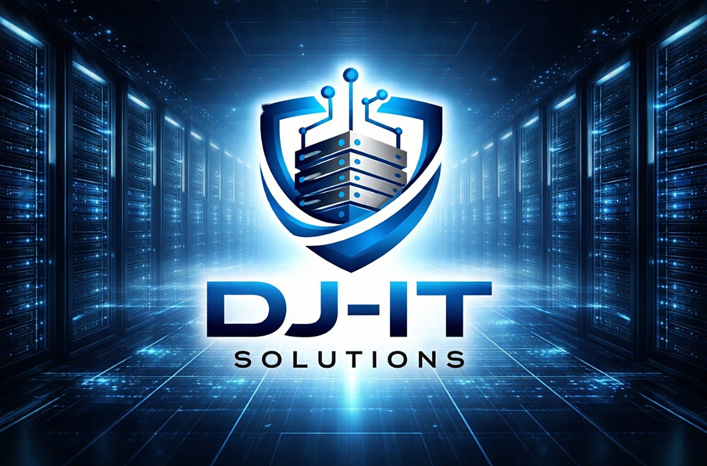

Virtualizacija
VMware vSphere/ESXi i Hyper-V: dizajn, migracije, optimizacija i održavanje virtuelnih okruženja.

Projektovanje, održavanje i zaštita IT infrastrukture: virtualizacija, mreže, bezbednost i backup.
VMware vSphere/ESXi i Hyper-V: dizajn, migracije, optimizacija i održavanje virtuelnih okruženja.
Projektovanje i administracija LAN/WAN mreža, segmentacija, VPN veze i povezivanje udaljenih lokacija.
Firewall politike, kontrola pristupa i zaštita sistema na nivou mreže, servera i korisnika.
Strategije rezervnih kopija i oporavka od katastrofe, sa redovnim testiranjem oporavka.
Senior sistem inženjer za IT infrastrukturu sa više od 15 godina iskustva u administraciji sistema, virtualizaciji, mrežama, backup-u i tehničkoj podršci.
Radio sam u velikim okruženjima sa više udaljenih lokacija, uz monitoring, dokumentaciju i podršku 2. i 3. nivoa.
Imate projekat ili pitanje o IT infrastrukturi? Javite se.